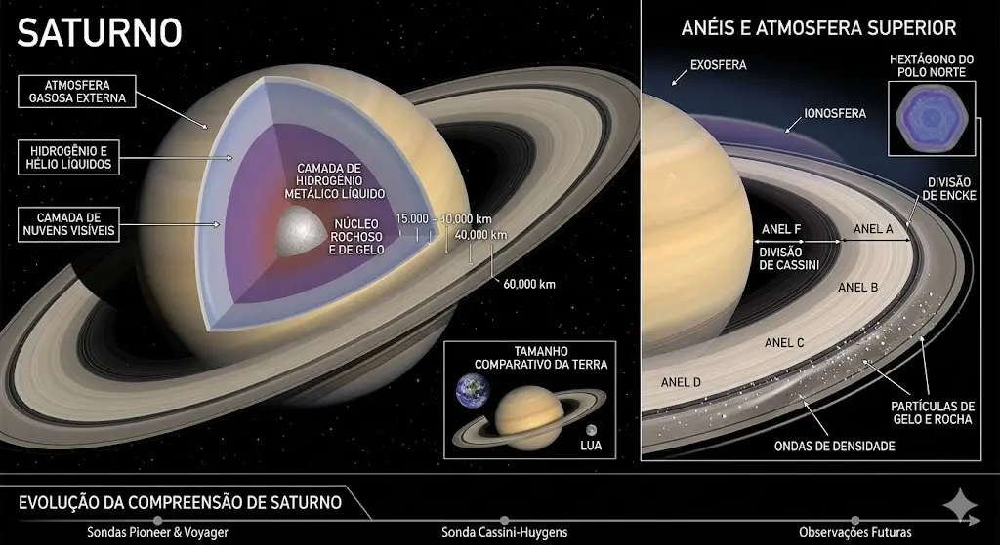
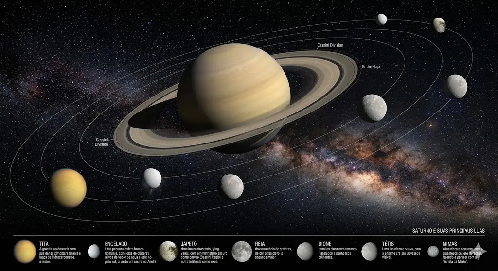

💍 Saturno: O Gigante dos Anéis
Saturno é um gigante gasoso conhecido por seu impressionante sistema de anéis, composto principalmente por partículas de gelo e rocha. Sua atmosfera é dominada por hidrogênio e hélio, apresentando ventos intensos e padrões de nuvens em constante movimento.
Apesar de sua aparência tranquila à distância, Saturno possui um ambiente dinâmico, com tempestades periódicas e variações atmosféricas significativas.
Beleza sustentada por fragilidade
Seus anéis, embora visualmente marcantes, são estruturas extremamente delicadas, influenciadas por forças gravitacionais e interações com suas luas.

🪐 Estrutura e Sistema
Saturno não possui uma superfície sólida definida, sendo formado por camadas gasosas que se tornam progressivamente mais densas em direção ao núcleo.
O planeta possui dezenas de luas, algumas com características únicas, incluindo oceanos subterrâneos e atmosferas próprias.
Um sistema complexo e dinâmico
A interação entre seus anéis e luas cria um dos sistemas mais interessantes e complexos do sistema solar.
